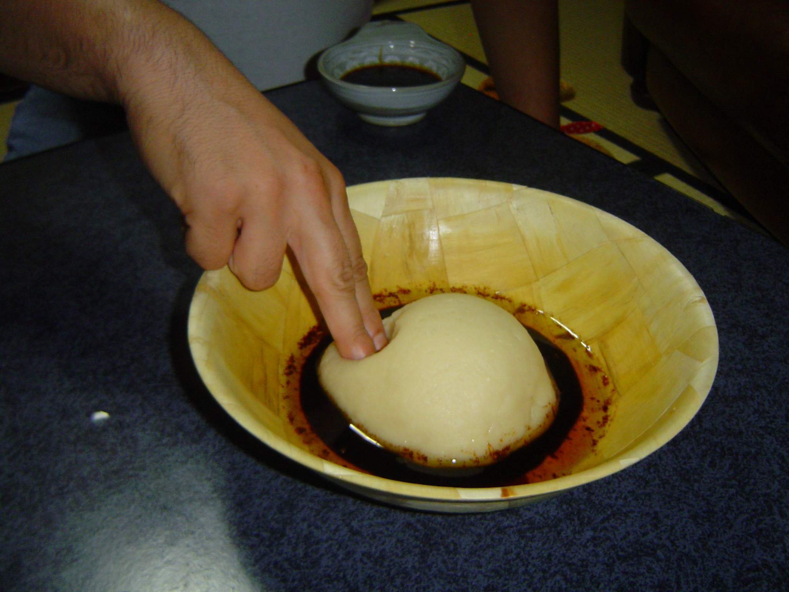

Traditional dress
Discover
Culture & Living Heritage
Food, crafts, dress, markets, folklore and hospitality shape the soul of Libya.
Living heritage
Culture is the soul of the journey
Discover traditions, food, crafts, dress, markets, folklore and stories through a premium visual gallery.
Food
Libyan cuisine
Crafts
Handmade memory
Folklore
Rhythm, horsemanship and celebrations
Markets
Old souks and local stories
Taste Libya
Food, hospitality and memory

Traditional dish
Bazin
A central dish in Libyan hospitality, connected to gatherings and local identity.

Celebration
Asida
Served in social and family occasions with strong cultural symbolism.

Local kitchen
Libyan table
A blend of Mediterranean, desert and regional tastes.